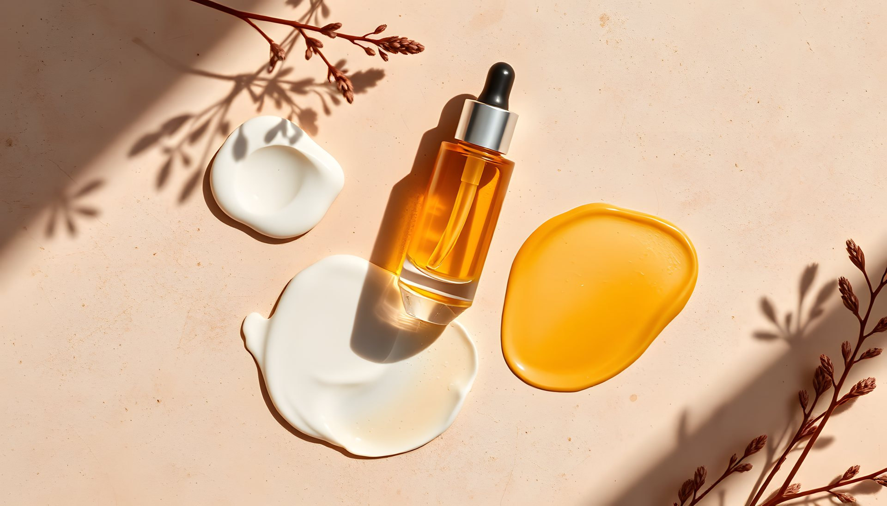
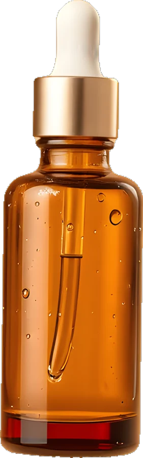
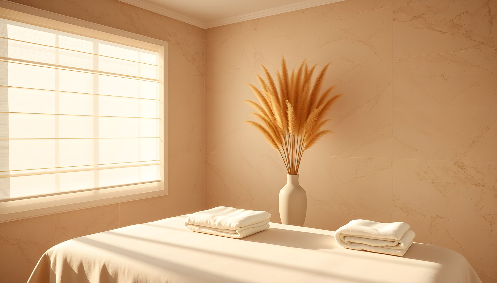
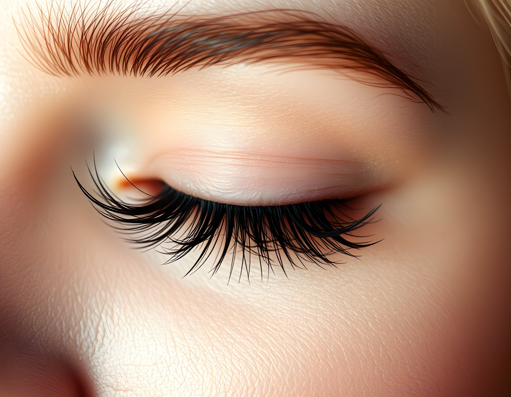
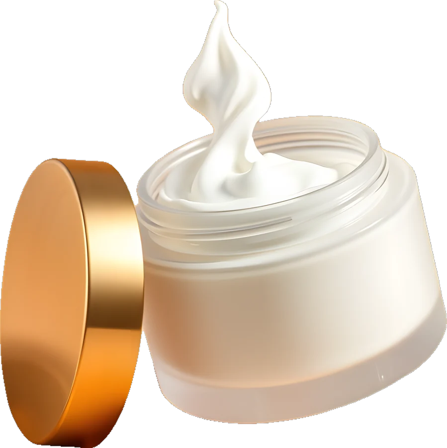
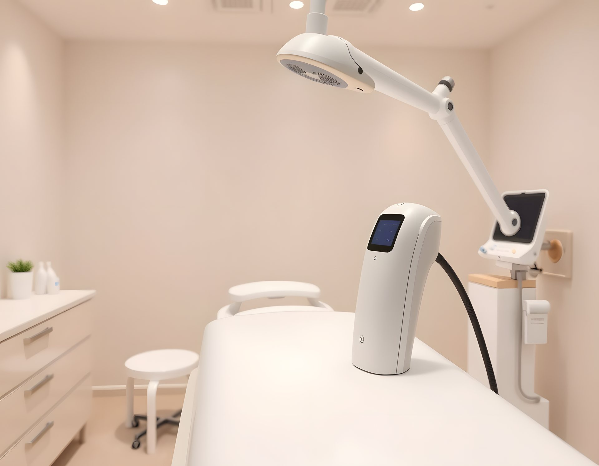

01
Analiz
Cilt tipinizi ve ihtiyacınızı birlikte değerlendiririz.

Cilt stüdyosu · Pamukkale / DenizliÖnce analiz, sonra ritüel. Cildinizin ihtiyacını dinleyen, acele etmeyen bir bakım stüdyosu.
Her bakım aynı sırayla ilerler; ürünler ve süreler cildinize göre değişir.

Cilt tipinizi ve ihtiyacınızı birlikte değerlendiririz.
Nazik temizlik, enzim peeling ve kil maskesi.

Serum ve masajla derinlemesine nem.

Güneş koruyucu ve evde bakım önerileri.
Analiz, temizlik, peeling, maske ve nem.
75 dakikaHyalüronik serum ve lenf drenaj masajı.
90 dakikaBuz başlıklı cihaz; seans planı bölgeye göre çıkarılır.
20–60 dakikaDoğal kirpiklere kıvrım ve renk.
60 dakikaKaşlara düzenli ve dolgun görünüm.
45 dakikaAyda bir klasik bakım; seanslar 3 ay içinde kullanılır.
4 × 75 dakikaBakım sonrasında cildinize uygun ürünleri öneriyoruz. Stüdyodan ya da telefonla sipariş verebilirsiniz.
30 ml · C vitamini

50 ml · Seramid
“Acele etmiyoruz. Her randevu arasında odayı yeniden hazırlıyoruz.”

Formu bırakın, uygun saatleri WhatsApp'tan paylaşalım. İlk randevuda 10 dakika önce gelmeniz yeterli.